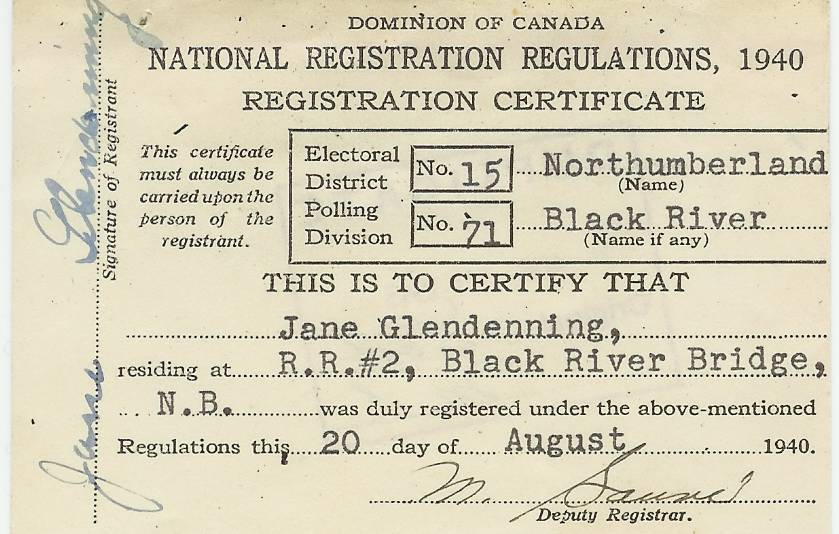
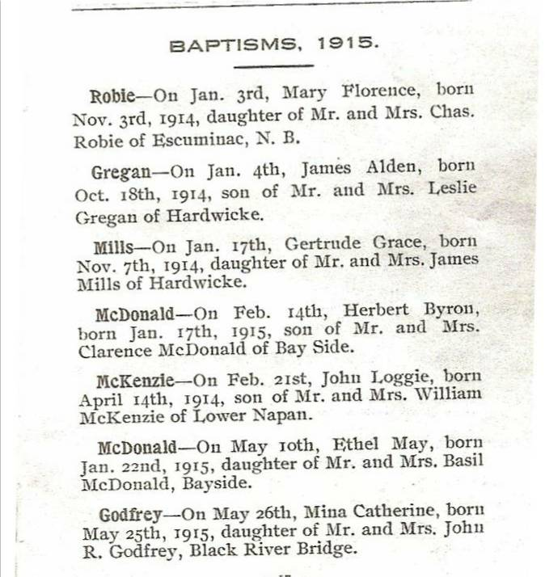
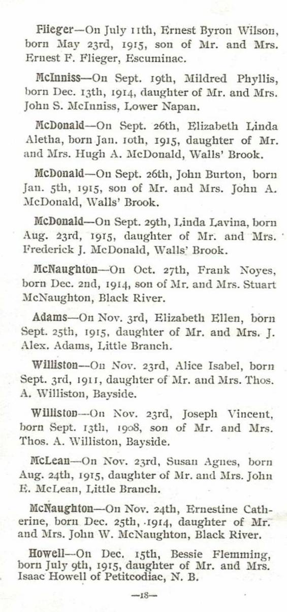

The Family Chronicle
No. 139 May 9, 2007
____________________________________________________________________
National Registration 1940-1946

National Registration Certificate of
Jane Elizabeth (Watling) Glendenning
During the period 1940-46, all adults over 16 in Canada, except for people in the military, members of religious orders and people in institutions, had to register. Registration was under the War Measures Act and was to permit the mobilization of all the human and material resources of the nation for the purpose of the defense and security of Canada.
Individuals had to provide name, address, age, date of birth, marital status, number of dependents, place and country of birth of individual and parents, nationality, year of entry into Canada (if an immigrant), racial origin, languages, education, general health, occupation, employment status, farming or mechanical skills; and previous military service.
Follow-up
“I especially enjoyed the memories of early automobiles, and the mention of gravity-fed gas tanks reminded me that early cars low on fuel sometimes had to go uphill in reverse to keep the fuel flowing. One item not mentioned was the tire repair kit, with the perforated lid used to rough up the inner tube area to be patched, and the tube of patching glue with its very powerful odor that I can still remember. Wonder we weren't addled by that stuff, since tires had to be repaired frequently.”
Donald Edge
Loyalists
Recently I read a small book (120 pp) on the arrival of the United Empire Loyalists in New Brunswick (Hope Restored by Robert Dallison). It was of interest because many Black River residents have Loyalist roots.
Many were soldiers who, on disbandment, received full food rations allowance for the first year, half rations for the second year and one third in year three.
In addition, refugees received such essentials as tools, cloth, shoes and stockings. Also, “each family was given one good blanket, and each single man a damaged one”.
More from St. Stephen’s Church


Ration books
The Wartime Price and Trade Board introduced food rationing in Canada in 1942 and issued ration books; I have Ration Book 2 and 3 that I picked up at a yard sale. While many things were in short supply, the purchase of tea, coffee, sugar, butter and gasoline required coupons. My books have coupons for meat and butter, and additional pages that are coded but not named. Molasses was covered by the sugar coupon.
People staying in hotels, camps, hospitals, etc. for a week or longer had to turn over their ration books during their stay so that the appropriate stamps could be removed. Although I believe truckers required stamps for gasoline, the same did not apply to farmers.
We also saved newspapers, lead from packages of loose tea, scrap metal, rags and clothing. Paper and cardboard could be used for cartons, shell wads and shell cases; metal was reused in the production of war materials and bones were used to make glue for airplanes.
I recall the entry to the Little Branch School piled high with paper, pots and pans and other scrap awaiting pickup.
The Family Chronicle (Copyright) is an occasional newsletter published by Don Glendenning and posted on the family website. It is intended to share information about my family, community and the times in which I grew up. While every effort is made to be accurate, errors are likely to occur. Comments, enquiries and information may be sent to 62 Queen Elizabeth Drive, Charlottetown, PEI, C1A 3A9. Tel: 902 892 5859. Email: don@glendenning.net Web: www.glendenning.net/don